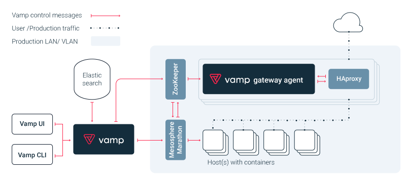

基于Vamp的部署
VAMP是一种开源解决方案，能够为基于容器和微服务的系统提供简便易用的金丝雀测试和发布功能。此外它还提供了强大的工作流功能，例如自动缩放之后进行恰当的排空（Drain）。
Vamp概述
VAMP本身并不是一个完整的微服务/容器类PaaS堆栈，而只是专注于专门为通用微服务/容器堆栈提供高层次的金丝雀测试/发布和自动缩放功能。VAMP能与很多容器和微服务平台集成，例如Mesosphere的Open DC/OS、Apache Mesos/Mesosphere Marathon、Docker Swarm以及（很快即将支持的）Kubernetes，当然还有诸如Cisco的Mantl、CapGemini的Apollo，或Rancher Labs的Rancher等堆栈，以及诸如MS Azure Container Service等容器云，这些容器的编排程序都能与VAMP进行集成。
VAMP可以将整个集群的度量指标进行汇总（毕竟你可能并不关心集群中某一实例的运行状况而只关心集群中的实例整体），同时可以确保缩容后的服务能恰当地排空，并能照顾到粘滞会话（Sticky-session）和存活时间（Time-to-live）问题。然而自动缩放仅仅是度量指标驱动的优化工作流的实现之一。VAMP的工作流引擎和度量指标以及事件API使得用户可以轻松地创建各种类型的自定义事件以及度量指标驱动的优化工作流，例如“日出而作日落而息（Follow-the-sun）”、“装箱（bin-packing）”、“云爆发（cloud bursting）”、成本/性能优化，以及“灯火管制（brown-out）”场景。
VAMP可以对持续改进环路的三个核心领域（部署编排和缩放，可编程的路由，度量指标/大数据汇总）进行编排，同时可以很容易地创建并交付其他优化工作流。例如“日出而作日落而息”场景（白天资源扩容，夜间资源缩容）、装箱问题（优化基础结构的利用率），以及灯火管制反馈环路（使用流量调节技术将整个系统的速度降低到某一可接受的程度以避免彻底中断）。
Vamp组件及功能
Vamp由一组服务器端和客户端组件组成，与用户的应用配合一起处理部署编排，路由，持久化存储和度量聚合。

VAMP UI
Vamp UI是一个用于在Web浏览器中管理Vamp的图形Web界面。它与Vamp组件一起打包部署。
VAMP CLI
Vamp CLI是一个通过命令行管理Vamp的工具并提供与（shell）脚本的集成。
VAMP
Vamp是业务逻辑和服务协调器并对外提供核心API接口。Vamp与配置的容器管理器（Docker，Marathon，Kubernetes等）进行会话，并通过ZooKeeper，etcd或Consul（分布式键值存储）将其与VGA同步。Vamp可以使用Elasticsearch进行工件持久化和事件（例如部署中的更改）存储。
通常，应该有一个Vamp实例和一个或多个VGA实例。 Vamp不是实时应用程序，仅当被请求（响应式）时才更新部署和路由，因此不需要在HA模式下运行多个实例。
VAMP WORKFLOWS
Vamp Workflows是一些小应用或脚本（例如JavaScript或容器），可自动调整运行中的系统及其部署和网关。Vamp已经内置了一组工作流，例如健康和指标，Vamp UI使用这些工作流监控系统状态并启用自动缩放和自我修复。
VAMP GATEWAY AGENT (VGA)
VGA从ZooKeeper，etcd或Consul读取HAProxy配置，并在尽可能接近零客户端请求中断的情况下针对每个配置更改重新加载HAProxy。
VGA通过Socket读取来自HAProxy的日志，并通过UDP推送到Logstash。 VGA会处理和恢复ZooKeeper，etcd，Consul和Logstash的停机，而不中断HAProxy进程和客户端请求。
通过上述Vamp组件功能及构成可以看出，Vamp通过实现服务发现，路由控制和负载均衡，事件及度量指标服务为基于容器和微服务的系统提供简便易用的金丝雀测试和发布功能。
服务发现
Vamp使用称为服务器端服务发现(microservices.io - server side discovery)的服务发现模式，可以无需更改代码或运行任何其他守护程序或代理而实现服务发现。除了服务发现之外，Vamp还可以用作服务注册表(microservices.io - service registry)。
采用这种模式的好处是：1）不会产生代码注入；2）不需要额外的库或代理依赖；3）对平台/语言无感知，只是HTTP；4）可以使用ENV环境变量轻松集成。
路由和负载
Vamp使用经过测试的逆向代理HAProxy进行路由/代理和负载平衡。VGA负责管理HAProxy的配置，HAProxy将入站流量路由到端点（明确定义的外部网关）或处理内部服务间的路由。
路由
Vamp首先查找是否为路由（Route）或网关（Gateway）设置了条件（conditions），条件可以零，一个或多个。如果条件匹配，Vamp会评估条件的强度百分比设置。100％设置意味着满足条件的所有请求都被发送到此路由。5％的设置意味着满足条件的所有请求的5％被发送到该路由，剩余的95％被返回到“桶”中并使用通用的权重设置来分发。
负载
Vamp的负载均衡对应用是透明的。基于正在运行的服务的规模设置，Vamp将确保所有实例都自动进行负载平衡。默认情况下，Vamp使用循环（round-robin）算法，但也支持其他的HAProxy负载机制。此外，Vamp还支持粘性路由。权重和条件百分比设置与应用运行的实例数量是分离的，例如，对于分别以四个和八个实例的规模运行的两个服务版本上的50:50的权重分布，Vamp调度的流量仍然按50％:50％分配。
VGA的Docker镜像打包了具有特定logstash配置的HAProxy。在性能方面，HAProxy非常高效，并且使用很少的资源。即使使用非常复杂和组合的路由规则，总开销仍保持在微秒范围内。
事件和指标
Vamp通过收集，存储和分析HTTP/TCP日志提供有效的反馈回路。日志的收集和存储是结合HAProxy，VGA和Logstash的设置完成的，日志最终存储在Elasticsearch中。

安装部署
Vamp对DC/OS支持非常好。在DC/OS中部署Vamp可以通过Universe安装，手动部署和自定义部署等多种方式，详细安装步骤请参考官方文档。